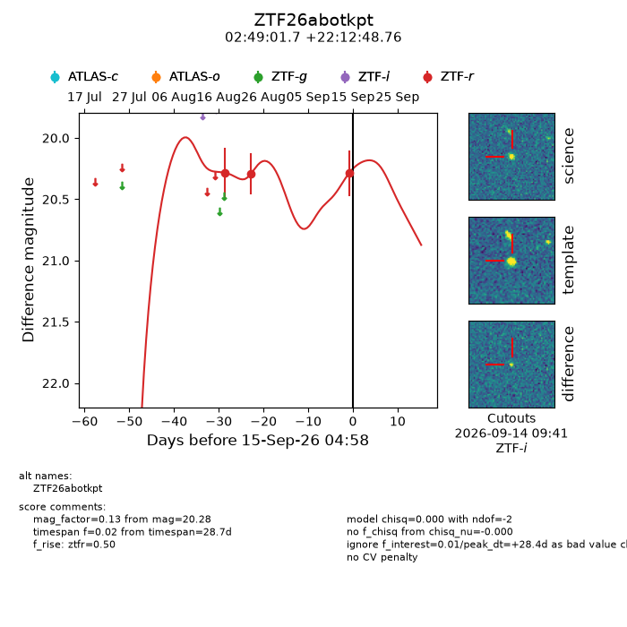
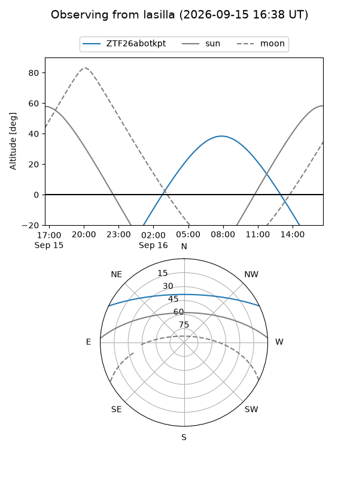
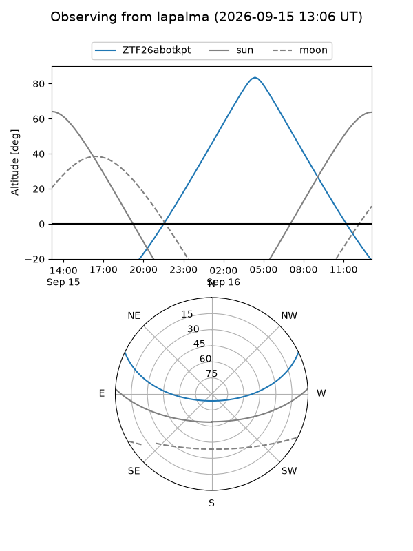
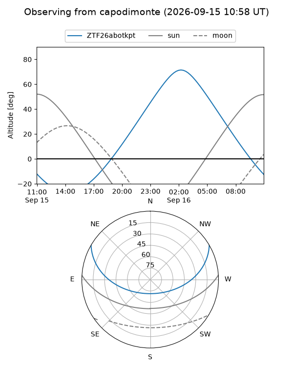
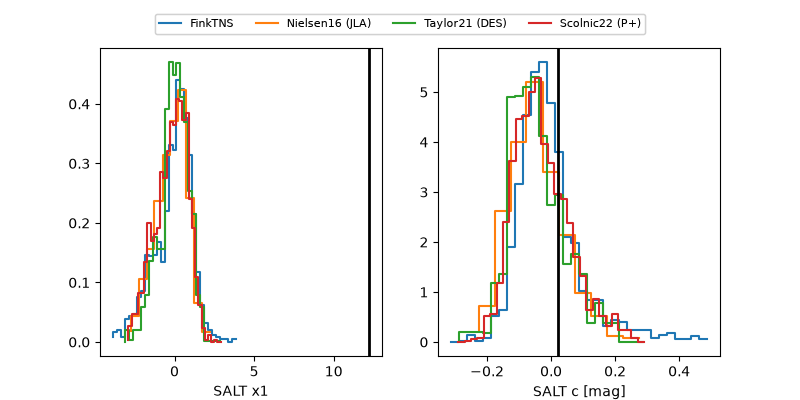

ZTF26abotkpt
Target ZTF26abotkpt at 2026-09-15 17:00
Aliases and brokers:
FINK-ZTF: ztf.fink-portal.org/ZTF26abotkpt
Lasair-ZTF: lasair-ztf.lsst.ac.uk/objects/ZTF26abotkpt
ALeRCE-ZTF: alerce.online/object/ZTF26abotkpt
Direct TNS query: direct search
alt names
ZTF26abotkpt (ztf,fink_ztf)
Coordinates:
equatorial (ra, dec) = 42.2570,+22.21355
equatorial (HMS+DMS) = 02:49:01.69,+22:12:48.76
galactic (l, b) = (155.7650,-33.05549)
Flags:
peak dt: +28.9
Photometry:
last ztfr=20.28
3 ztfr detections
Lightcurve

Visibility



Additional plots
